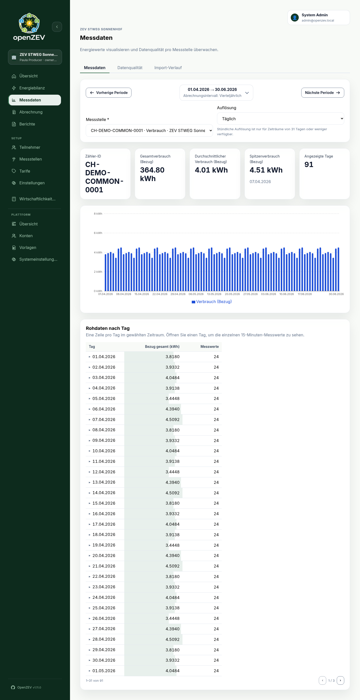

Metering Analysis¶
This guide covers analyzing metering data through charts and data quality views.
Data Visualization¶
OpenZEV provides charts of consumption and production per metering point.

Accessing Metering Charts¶
Navigate to Metering to see charts.
Filtering Your View¶
Use the selectors above the chart:
| Selector | Purpose | Default |
|---|---|---|
| Metering Point | Single meter, or (admin/ZEV owner only) Whole ZEV total to sum every meter in the selected ZEV into one series — required to see a chart | None selected |
| Date Range | Period to display | Current billing period (matches the ZEV's billing interval) |
| Resolution | Aggregation level (Hourly, Daily, Monthly) |
Daily |
Until a metering point is selected, the chart area shows a prompt instead of data. The Whole ZEV total option is only offered when managing a ZEV (admin or ZEV owner) — a participant selects among their own metering points instead. Selecting it hides the Raw Readings Table below, since raw readings only make sense for one physical meter.
If the selected metering point has no readings at all in the chosen period but does have data elsewhere, the empty state offers a button to jump straight to the period it actually covers instead of a dead end.
Date Range Presets¶
The date range picker offers:
- Current period — the ZEV's billing period containing today
- This month / Last month
- This quarter / Last quarter
- This year / Last year
- A calendar to pick a custom start/end date
Selecting a period updates the page's URL, so a link to a specific metering point and period can be shared or bookmarked.
Resolution Levels¶
- Hourly: Each bar = 1 hour of data (detailed view)
- Daily: Each bar = 24 hours (weekly/monthly view, less detail)
- Monthly: Each bar = 1 month (yearly view, highest level)
Choose hourly for troubleshooting; daily/monthly for trend analysis. Hourly resolution is only available for periods of 31 days or less — for a longer period the option is disabled and the view falls back to daily, since an hourly chart over e.g. a full year would be thousands of bars.
Chart Display¶
The chart shows:
- X-axis: Time periods
- Y-axis: Energy (kWh)
- Grouped bars (side by side, not stacked):
- 🟢 Green: Production or feed-in (
OUT) — only shown when the meter has exported energy in the period. The label reads "Production" for a pure production meter and "Feed-in" for a bidirectional one. - 🔵 Blue: Consumption (
IN)
- 🟢 Green: Production or feed-in (
- Tooltips: Hover to see exact values
- Summary cards above the chart: total consumption, average and peak consumption per bar (with the peak card naming which bar it was), total production/feed-in (when present), and the number of bars shown
Raw Readings Table¶
Below the chart (single meter only — not shown for a whole-ZEV total), the Raw Data by Day table shows one row per day in the selected period — day, consumption total, feed-in/production total (when the meter exports), and the number of readings. A day's consumption/feed-in cell is shaded proportionally to its size relative to the largest day in the period, so an outlier stands out without reading every value. Long periods are paginated a month (31 days) at a time.
Two flags can appear next to a day's date:
- Zero consumption — the day has an assignment holder but recorded no energy at all, which usually means a meter or import problem rather than genuinely nothing used.
- Negative total — the day's consumption or feed-in total is below zero, which should not happen for a normal reading.
Opening a day expands it into a compact intraday chart plus an hour × 15-minute grid of the exact values, so you can spot an individual anomalous reading the aggregated chart may hide. The expanded detail also flags negative individual readings and duplicate (timestamp, direction) readings, if any. Readings are grouped by their UTC calendar day, matching how imported timestamps are stored.
Data Quality View¶
Use the Data Quality tab to assess completeness and health of metering data. Unlike the Chart tab, selecting a metering point here is optional — leave it blank to see every metering point you can access.
Summary Cards¶
At the top, three cards summarize the selected period:
| Card | Meaning | Ideal |
|---|---|---|
| 🟢 Complete | Metering points with a reading on every day in the period | High |
| 🟡 Partial | Points with at least one reading, but missing some days | Medium |
| 🔴 Missing | Points with no readings in the period at all | Zero |
Coverage is day-level, not reading-level: a metering point counts a day as covered if it has any reading that day, regardless of the meter's resolution or how many readings were expected. A meter that has never received a single reading still appears here — as Missing at 0%.
Each card is also a filter: click one to narrow the table below to only that severity, and click the active card again to clear the filter.
Status Table¶
Below the summary cards, a table shows per-metering-point details. Any column can be sorted by clicking its header (the Status column sorts worst severity first).
| Column | Shows |
|---|---|
| Meter ID | Equipment identifier — click it to jump to that meter's Chart tab with the same period |
| Participant | The most recent holder within the selected period — not necessarily today's holder, if the meter has since changed hands |
| Data Completeness | Percentage of days in the period with at least one reading |
| Status | 🟢 Complete, 🟡 Partial, 🔴 Missing |
| Missing Days | The first missing date range; click "+N more" to expand the full list in place |
Two additional warnings can appear under a meter's status, independent of its coverage:
- Overlapping assignment windows — the meter has two assignments that overlap in time, a data problem that needs fixing before its billing can be trusted. Reassign the affected meter to resolve it.
- Unassigned readings — some of the meter's readings fall on a day with no assignment holder at all. Those readings are not billed to anyone; see Billing Impact of Data Quality Issues.
How Gaps Are Detected¶
A gap is a calendar day in the selected period with zero readings for that metering point — detection does not look at hours, and does not consider whether the meter had an assignment on that day (that's the separate "unassigned readings" warning above, not a gap).
Example, for a metering point importing daily readings:
| Date | Status | Reason |
|---|---|---|
| Jan 1–5 | ✓ Covered | At least one reading each day |
| Jan 6 | ✗ Gap | No reading at all that day |
| Jan 7–31 | ✓ Covered | At least one reading each day |
This period would show 96% data completeness (30 of 31 days) and a single one-day gap on Jan 6.
Data Quality Troubleshooting¶
High percentage of "Missing" meters¶
Causes:
- Metering data not yet imported
- The meter has never received a reading (e.g. newly created, not yet wired into an import)
- Assignment validity period doesn't overlap billing period
Fixes:
- Check Metering Points — is the meter defined and active?
- Check import status — were readings imported?
- Review participant validity dates — is the member active?
Partial coverage with gaps¶
Causes:
- Meter malfunction or power outage
- File upload incomplete
- Timestamp mismatch during import (wrong format interpretation)
Fixes:
- Ask participants to verify meter status
- Review the import protocol for parse errors
- Re-import the affected readings with the correct timestamp format
Sudden spikes or drops¶
OpenZEV does not run general anomaly detection (no statistical outlier scoring) — the Raw Readings Table flags a fixed set of known problem patterns instead (zero consumption with an assignment holder, negative totals or individual readings, duplicate timestamps; see Raw Readings Table), which won't catch every kind of spike or drop. To investigate one that isn't flagged, review the raw readings on the chart and confirm the value with the metering source.
Billing Impact of Data Quality Issues¶
OpenZEV generates invoices even if some metering data is incomplete. The period overview reports data quality with a severity indicator (green / yellow / red) and coverage percentage, so you can see which metering points were incomplete for the period.
Participants affected by incomplete data should be informed which meters were affected and how billing was handled for those readings.
Next Steps¶
- Fix import issues: Metering Imports
- Set metering point details: Metering Points
- Configure tariffs: Tariff Configuration
- Generate invoices: Invoice Management